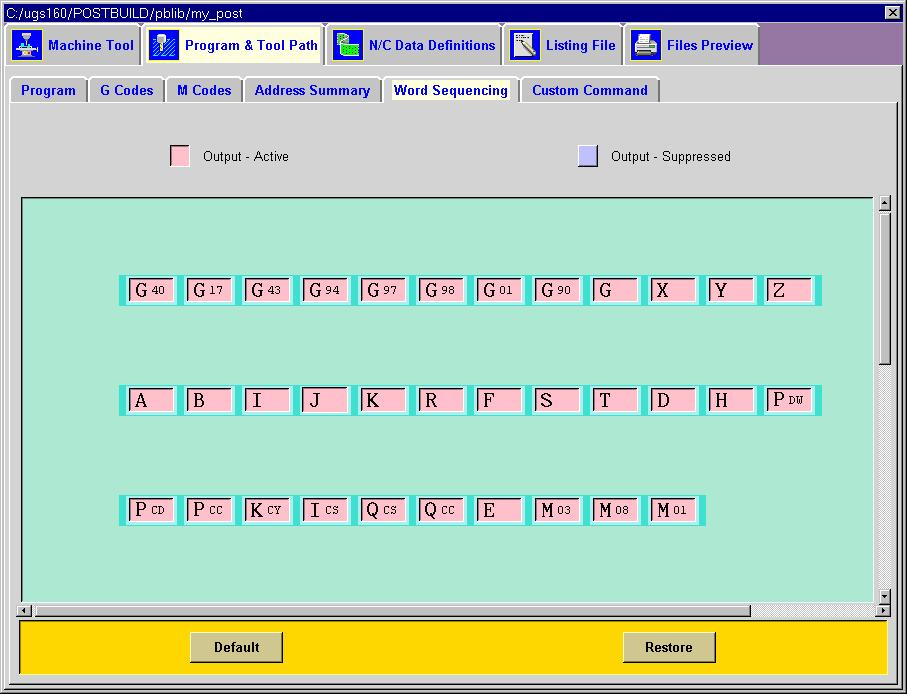
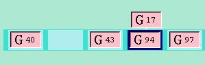
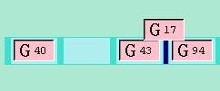
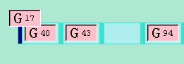

Word Sequencing
This dialog allows you to define the order in which all the words in your
postprocessor will be output. The relative order of the words in
this dialog will be enforced throughout your entire postprocessor.
For example, if you exchange the X and Y words, it will immediately be
reflected in all the blocks in all events. You can also suppress
or make any word active. Select any word and it will change from
pink to blue indicating that it is now suppressed. If Balloon Help
is active each word will display the context of that word. By default,
a representative code is used to display that word. For example,
the G17 word can also be G18 or G19. In other cases a D or T represents
the adjust register or tool number register. Any change to the leader
for that word will be reflected in this dialog.

In this dialog you can perform the following functions:
Exchange two words.
Select and drag one of the words you wish to exchange until the word
you want to exchange it with is fully highlighted. Release the mouse
and they have now exchanged places.

Move a word
to between two other words.
Select and drag the word you want to move until the space between the
words is highlighted. Release the mouse and your word is now inserted
bewtween the other two.

Move
a word to the beginning or end of a row.
Select and drag the word you want to move until the space at the front
or end of the row is highlighted. Release the mouse and your word
is now at the beginning or end of the row.
